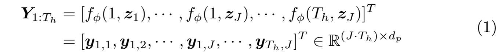
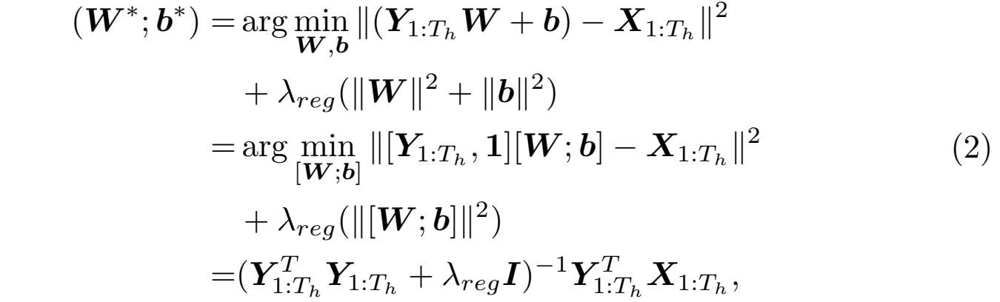
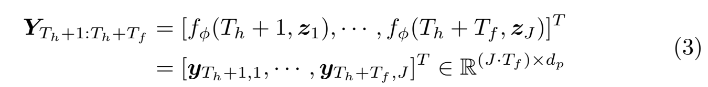
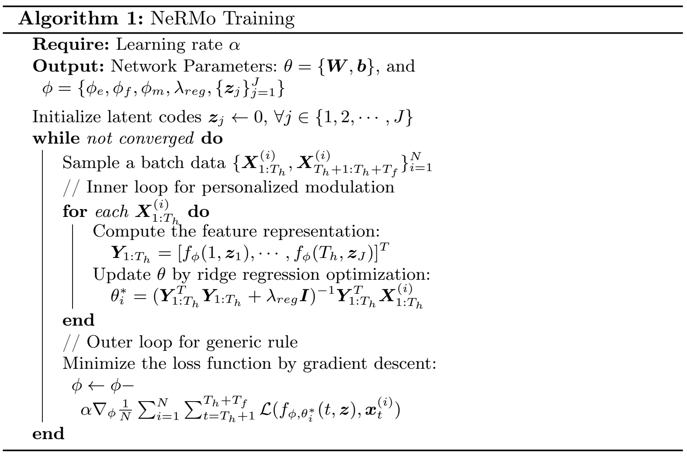
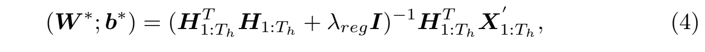
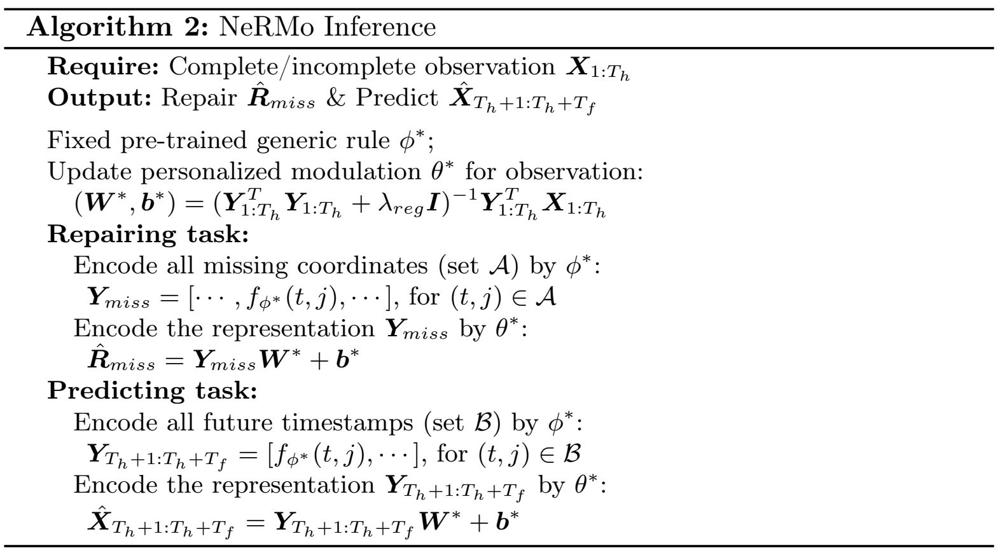
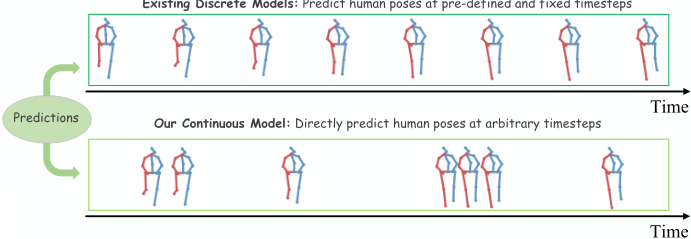
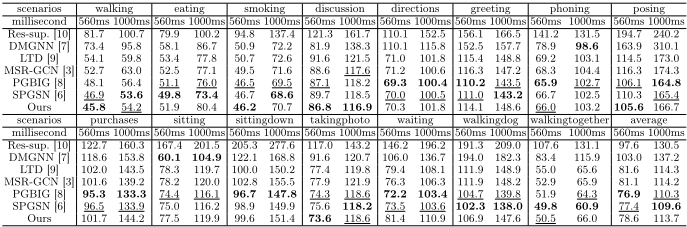
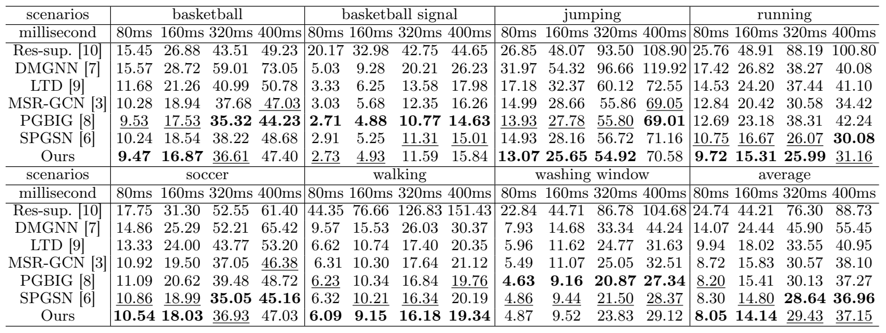
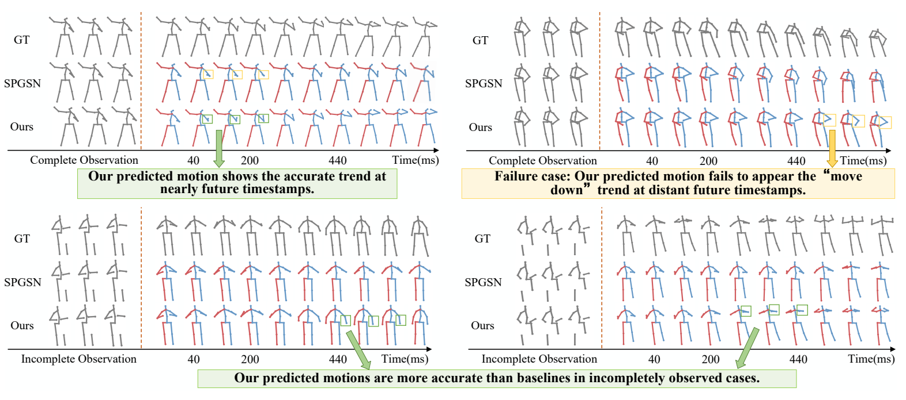

NeRMo: Learning Implicit Neural Representations for 3D Human Motion Prediction --Supplementary Material--
Dong Wei, Huaijiang Sun, Xiaoning Sun (corresponding author), and Shengxiang Hu
Nanjing University of Science and Technology, Nanjing, China
In the supplementary, we first provide more implementation details (Section A) and demonstrate the derivation of efficient meta-optimization (Section B). In Section C, we provide a detailed analysis explaining why a time-index model is not suitable for the task of human motion prediction. We also provide the detailed training and inference algorithms (Section D), several additional experiments (Section E), limitation and future work (Section F).
A Implementation Details
We set the shape of joint-specific latent code z as 256, which is then incorporated into the temporal Fourier features with 256-dimension through concatenation. We use VQ-VAE [12] for pre-processing and train a codebook with a size of 1024 × 512. The number of learnable query embeddings of codebookcoordinate attention is 256, and the dimension of each embedding is 128. We employ FCBlock with a feature dimension of 1024 and a total of 6 FCBlocks, where each FCBlock consists of a fully connected feed forward layer with layer normalization, ReLU activations and a skip connection at the end. For maskaware spatial attention, we utilize 6 attention layers with 8 heads in the multihead attention mechanism. For meta-optimization, we only require one inner loop due to closed-form solution. The model is trained for 150 epochs with a batch size of 16. Note that all training motions are normalized before being fed into the network. We employ the Adam optimizer and train the model under Pytorch framework on a single NVIDIA RTX-3080 GPU.
B Efficient Meta-Optimization
Different from conventional approaches [4, 11] that explore direct backpropagation through complicated gradient computations to tackle the bi-level optimization, we suppose that the personalized modulation only involves the last layer of INR while the rest parameters are set as generic rule, achieving high efficiency. This transforms the inner loop optimization into a simple ridge regression problem with a simple closed-form solution [1, 14].
Mathematically, we denote the network parameters of our generic rule as ϕ = {ϕe, ϕf , ϕm, λreg, {zj}Jj=1 }, where ϕe, ϕf , ϕm represent the parameters of spatialtemporal encoding, several FCBlocks and mask-aware spatial attention modules, respectively. λreg represents the weight parameter of ridge regression optimization, and {zj}Jj=1 represent learnable latent variables for each joint. The parameters of our personalized modulation are denoted as θ = {W, b}, i.e., the parameters of the last INR linear layer. Given one training sample with the past observationX1:Th = [x1,1, x1,2, · · · , x1,J, x2,1, · · · , xTh,1, xTh,2, · · · , xTh,J] ∈ R(J·Th)×df , let the mapping fϕ : (R,Rdin ) ↦→ Rdp , where fϕ(t, zj) = yt,j and zj is a latent code for the j-th joint. The feature representation of the past window obtained from fϕ (i.e., the output feature before the last linear layer) can be formulated as follows:


Equation text (LaTeX)
\begin {aligned} \bm {Y}_{1:T_{h}}&=[f_{\phi }(1,\bm {z}_{1}),\cdots ,f_{\phi }(1,\bm {z}_{J}),\cdots ,f_{\phi }(T_{h},\bm {z}_{J})]^{T}\\ &=[\bm {y}_{1,1},\bm {y}_{1,2},\cdots ,\bm {y}_{1,J},\cdots ,\bm {y}_{T_{h},J}]^{T}\in \mathbb {R}^{(J\cdot T_{h})\times d_{p}} \end {aligned}
where yt,j denotes the feature representation of the j-th body joint in the t-th human pose. These (J · Th) features with dp dimension are concatenated into a large matrix Y1:Th . The optimization problem of inner loop is then formulated as follows:


Equation text (LaTeX)
\begin {aligned} (\bm {W}^{*};\bm {b}^{*})=&\arg \min _{\bm {W},\bm {b}}\|(\bm {Y}_{1:T_{h}}\bm {W}+\bm {b})-\bm {X}_{1:T_{h}}\|^{2}\\ &+\lambda _{reg}(\|\bm {W}\|^{2}+\|\bm {b}\|^{2})\\ =&\arg \min _{[\bm {W};\bm {b}]}\|[\bm {Y}_{1:T_{h}},\bm {1}][\bm {W};\bm {b}]-\bm {X}_{1:T_{h}}\|^{2}\\ &+\lambda _{reg}(\|[\bm {W};\bm {b}]\|^{2})\\ =&(\bm {Y}_{1:T_{h}}^{T}\bm {Y}_{1:T_{h}}+\lambda _{reg}\bm {I})^{-1}\bm {Y}_{1:T_{h}}^{T}\bm {X}_{1:T_{h}}, \end {aligned}
where 1 ∈ Rdp is a vector containing all ones, I ∈ Rdp×dp is a identity matrix, W ∈ Rdp×df and b ∈ R1×df . In our case, df is set to 1. Now, let the feature representation of the future window obtained from fϕ (i.e., the output feature before the last linear layer) be as follows:


Equation text (LaTeX)
\begin {aligned} \bm {Y}_{T_{h}+1:T_{h}+T_{f}}&=[f_{\phi }(T_{h}+1,\bm {z}_{1}),\cdots ,f_{\phi }(T_{h}+T_{f},\bm {z}_{J})]^{T}\\ &=[\bm {y}_{T_{h}+1,1},\cdots ,\bm {y}_{T_{h}+T_{f},J}]^{T}\in \mathbb {R}^{(J\cdot T_{f})\times d_{p}} \end {aligned}
Consequently, our predicted future motion can be denoted as ˆXTh+1:Th+Tf = YTh+1:Th+Tf W ∗ + b∗ . This closed-form solution is differentiable, allowing the parameters of the generic rule ϕ to update its gradients.
C Analysis of Time Index Model
In this section, we present an analysis that explains why we adopt the spatialtemporal disentangled representation rather than the temporal representation [14]. Generally, human motions are time-continuous data while the spatial joints are discrete. In this perspective, it seems that the time index model is more natural to modeling motions, as shown in motion reconstruction [5].
We argue that such modeling is not well-suited for our human motion prediction (HMP) framework due to the following reasons. Unlike motion reconstruction that aims to minimize the loss between the generated and ground truth
Algorithm 1: NeRMo Training


motion, the objective of HMP is to generate future poses that extend beyond the observed time window. As described in Section 3.4 of main paper, we employ a meta-optimization framework to ensure good extrapolation, whose solution is in Eqn.(2). If we use time index model, Eqn.(2) is reformulated as follows:


Equation text (LaTeX)
(\bm {W}^{*};\bm {b}^{*})=(\bm {H}_{1:T_{h}}^{T}\bm {H}_{1:T_{h}}+\lambda _{reg}\bm {I})^{-1}\bm {H}_{1:T_{h}}^{T}\bm {X}_{1:T_{h}}^{'}, (4)
where H1:Th = [h1, h2, · · · , hTh ]T ∈ RTh×dp denotes the output feature representation before the last linear layer, ht denotes the feature representation of the t-th human pose, and X′1:Th = [x1, x2, · · · , xTh ] ∈ RTh×df is the past observation. Given 10 past poses to predict 25 future poses, the coordinate dimension dp is much larger than 10 (usually set as 1,024), resulting in H1:Th ∈ R10×1024 . Consequently, the solution of (HT 1:Th H1:Th +λregI)-1 is not reliable due to severe numerical instability. In contrast, the feature representation Y1:Th of our proposed method is the size of 660 × 1024, which significantly alleviates the aforementioned limitation. Experimental results in Figure 7(a) of main paper also validate the effectiveness of the proposed method.
D Training & Inference Algorithm
The training and inference algorithms of our proposed method NeRMo are reported in Algorithm 1 and 2, respectively. During training, the personalized modulation parameters θ = {W, b} and the generic rule parameters ϕ = {ϕe, ϕf , ϕm, λreg, {zj}Jj=1} are optimized at the same time. At inference, we fix
Algorithm 2: NeRMo Inference


generic rule parameters ϕ, and adapt to a new observation X1:Th by updating personalized modulation parameters θ. Note that our NeRMo can realize fast adaptation due to a closed-form solution of ridge regression optimization, instead of backpropagating through complicated gradient computations.
E Additional Experiments
E.1 Distinctive Properties
The use of implicit neural representations in our NeRMo grants it distinctive properties in the context of human motion prediction, compared to other baselines. For instance, NeRMo supports anytime pose forecasting, allowing for the estimation of human poses at any future time step. This property enhances decision-making in human-machine interaction systems, such as sweeping robots [13]. Such tasks require fast and accurate pose predictions at one or several designated timestamps. Fig. 1 presents the comparison results, indicating that previous methods indirectly achieve anytime forecasting either by interpolating poses predicted at all pre-defined timestamps or approximating with densely predicted pose sequences.
E.2 Long-Term Prediction on Human3.6M
Table 1 reports the comparisons of long-term prediction (more than 400ms but less than 1000ms) on Human3.6M dataset. From the table, we observe that NeRMo achieves results that are slightly inferior to those of state-of-the-art methods, including PGBIG and SPGSN. While NeRMo showcases the advantages of implicit neural representation, one potential challenge is the overfitting to observed poses, leading to limited extrapolation ability when it comes to long-term motion prediction.




Recognized table text (check against the image)
| scenarios | walking | eating | smoking | discussion | directions | greeting | phoning | posing | ||||||||
|---|---|---|---|---|---|---|---|---|---|---|---|---|---|---|---|---|
| millisecond | 560ms | 1000ms | 560ms | 1000ms | 560ms | 1000ms | 560ms | 1000ms | 560ms | 1000ms | 560ms | 1000ms | 560ms | 1000ms | 560ms | 1000ms |
| Res-sup. [10] | 81.7 | 100.7 | 79.9 | 100.2 | 94.8 | 137.4 | 121.3 | 161.7 | 110.1 | 152.5 | 156.1 | 166.5 | 141.2 | 131.5 | 194.7 | 240.2 |
| DMGNN [7] | 73.4 | 95.8 | 58.1 | 86.7 | 50.9 | 72.2 | 81.9 | 138.3 | 110.1 | 115.8 | 152.5 | 157.7 | 78.9 | 98.6 | 163.9 | 310.1 |
| LTD [9] | 54.1 | 59.8 | 53.4 | 77.8 | 50.7 | 72.6 | 91.6 | 121.5 | 71.0 | 101.8 | 115.4 | 148.8 | 69.2 | 103.1 | 114.5 | 173.0 |
| MSR-GCN [3] | 52.7 | 63.0 | 52.5 | 77.1 | 49.5 | 71.6 | 88.6 | 117.6 | 71.2 | 100.6 | 116.3 | 147.2 | 68.3 | 104.4 | 116.3 | 174.3 |
| PGBIG [8] | 48.1 | 56.4 | 51.1 | 76.0 | 46.5 | 69.5 | 87.1 | 118.2 | 69.3 | 100.4 | 110.2 | 143.5 | 65.9 | 102.7 | 106.1 | 164.8 |
| SPGSN [6] | 46.9 | 53.6 | 49.8 | 73.4 | 46.7 | 68.6 | 89.7 | 118.5 | 70.0 | 100.5 | 111.0 | 143.2 | 66.7 | 102.5 | 110.3 | 165.4 |
| Ours | 45.8 | 54.2 | 51.9 | 80.4 | 46.2 | 70.7 | 86.8 | 116.9 | 70.3 | 101.8 | 114.1 | 148.6 | 66.0 | 103.2 | 105.6 | 166.7 |
| scenarios | purchases | sitting | sittingdown | takingphoto | waiting | walkingdog | walkingtogether | average | ||||||||
| millisecond | 560ms | 1000ms | 560ms | 1000ms | 560ms | 1000ms | 560ms | 1000ms | 560ms | 1000ms | 560ms | 1000ms | 560ms | 1000ms | 560ms | 1000ms |
| Res-sup. [10] | 122.7 | 160.3 | 167.4 | 201.5 | 205.3 | 277.6 | 117.0 | 143.2 | 146.2 | 196.2 | 191.3 | 209.0 | 107.6 | 131.1 | 97.6 | 130.5 |
| DMGNN [7] | 118.6 | 153.8 | 60.1 | 104.9 | 122.1 | 168.8 | 91.6 | 120.7 | 106.0 | 136.7 | 194.0 | 182.3 | 83.4 | 115.9 | 103.0 | 137.2 |
| LTD [9] | 102.0 | 143.5 | 78.3 | 119.7 | 100.0 | 150.2 | 77.4 | 119.8 | 79.4 | 108.1 | 111.9 | 148.9 | 55.0 | 65.6 | 81.6 | 114.3 |
| MSR-GCN [3] | 101.6 | 139.2 | 78.2 | 120.0 | 102.8 | 155.5 | 77.9 | 121.9 | 76.3 | 106.3 | 111.9 | 148.2 | 52.9 | 65.9 | 81.1 | 114.2 |
| PGBIG [8] | 95.3 | 133.3 | 74.4 | 116.1 | 96.7 | 147.8 | 74.3 | 118.6 | 72.2 | 103.4 | 104.7 | 139.8 | 51.9 | 64.3 | 76.9 | 110.3 |
| SPGSN [6] | 96.5 | 133.9 | 75.0 | 116.2 | 98.9 | 149.9 | 75.6 | 118.2 | 73.5 | 103.6 | 102.3 | 138.0 | 49.8 | 60.9 | 77.4 | 109.6 |
| Ours | 101.7 | 144.2 | 77.5 | 119.9 | 99.6 | 151.4 | 73.6 | 118.6 | 81.4 | 110.9 | 106.9 | 147.6 | 50.5 | 66.0 | 78.6 | 113.7 |
E.3 More Results on CMU-MoCap
Table 2 in the main paper presents the average prediction errors at each timestamp for all types of actions. To provide more comprehensive experimental results, we present additional details in Table 2. The table reveals that our method consistently outperforms other baselines in most cases, particularly for predictions at 80ms and 160ms timestamps. These findings highlight the superior performance of our method compared to others.
E.4 More Visualizations
In Fig. 2, we provide more visualizations of the predicted poses of different methods. In each sub-figure, from top to bottom are the ground truth, SPGSN [6] and our proposed NeRMo, respectively. Our predictions are more similar to the ground truth than the results of SPGSN in most cases.


Table 2 as selectable text
| Method | basketball | basketball signal | jumping | running | ||||||||||||
|---|---|---|---|---|---|---|---|---|---|---|---|---|---|---|---|---|
| 80ms | 160ms | 320ms | 400ms | 80ms | 160ms | 320ms | 400ms | 80ms | 160ms | 320ms | 400ms | 80ms | 160ms | 320ms | 400ms | |
| Res-sup. [10] | 15.45 | 26.88 | 43.51 | 49.23 | 20.17 | 32.98 | 42.75 | 44.65 | 26.85 | 48.07 | 93.50 | 108.90 | 25.76 | 48.91 | 88.19 | 100.80 |
| DMGNN [7] | 15.57 | 28.72 | 59.01 | 73.05 | 5.03 | 9.28 | 20.21 | 26.23 | 31.97 | 54.32 | 96.66 | 119.92 | 17.42 | 26.82 | 38.27 | 40.08 |
| LTD [9] | 11.68 | 21.26 | 40.99 | 50.78 | 3.33 | 6.25 | 13.58 | 17.98 | 17.18 | 32.37 | 60.12 | 72.55 | 14.53 | 24.20 | 37.44 | 41.10 |
| MSR-GCN [3] | 10.28 | 18.94 | 37.68 | 47.03 | 3.03 | 5.68 | 12.35 | 16.26 | 14.99 | 28.66 | 55.86 | 69.05 | 12.84 | 20.42 | 30.58 | 34.42 |
| PGBIG [8] | 9.53 | 17.53 | 35.32 | 44.23 | 2.71 | 4.88 | 10.77 | 14.63 | 13.93 | 27.78 | 55.80 | 69.01 | 12.69 | 23.18 | 38.31 | 42.24 |
| SPGSN [6] | 10.24 | 18.54 | 38.22 | 48.68 | 2.91 | 5.25 | 11.31 | 15.01 | 14.93 | 28.16 | 56.72 | 71.16 | 10.75 | 16.67 | 26.07 | 30.08 |
| Ours | 9.47 | 16.87 | 36.61 | 47.40 | 2.73 | 4.93 | 11.59 | 15.84 | 13.07 | 25.65 | 54.92 | 70.58 | 9.72 | 15.31 | 25.99 | 31.16 |
| Method | soccer | walking | washing window | average | ||||||||||||
|---|---|---|---|---|---|---|---|---|---|---|---|---|---|---|---|---|
| 80ms | 160ms | 320ms | 400ms | 80ms | 160ms | 320ms | 400ms | 80ms | 160ms | 320ms | 400ms | 80ms | 160ms | 320ms | 400ms | |
| Res-sup. [10] | 17.75 | 31.30 | 52.55 | 61.40 | 44.35 | 76.66 | 126.83 | 151.43 | 22.84 | 44.71 | 86.78 | 104.68 | 24.74 | 44.21 | 76.30 | 88.73 |
| DMGNN [7] | 14.86 | 25.29 | 52.21 | 65.42 | 9.57 | 15.53 | 26.03 | 30.37 | 7.93 | 14.68 | 33.34 | 44.24 | 14.07 | 24.44 | 45.90 | 55.45 |
| LTD [9] | 13.33 | 24.00 | 43.77 | 53.20 | 6.62 | 10.74 | 17.40 | 20.35 | 5.96 | 11.62 | 24.77 | 31.63 | 9.94 | 18.02 | 33.55 | 40.95 |
| MSR-GCN [3] | 10.92 | 19.50 | 37.05 | 46.38 | 6.31 | 10.30 | 17.64 | 21.12 | 5.49 | 11.07 | 25.05 | 32.51 | 8.72 | 15.83 | 30.57 | 38.10 |
| PGBIG [8] | 11.09 | 20.62 | 39.48 | 48.72 | 6.23 | 10.34 | 16.84 | 19.76 | 4.63 | 9.16 | 20.87 | 27.34 | 8.20 | 15.41 | 30.13 | 37.27 |
| SPGSN [6] | 10.86 | 18.99 | 35.05 | 45.16 | 6.32 | 10.21 | 16.34 | 20.19 | 4.86 | 9.44 | 21.50 | 28.37 | 8.30 | 14.80 | 28.64 | 36.96 |
| Ours | 10.54 | 18.03 | 36.93 | 47.03 | 6.09 | 9.15 | 16.18 | 19.34 | 4.87 | 9.52 | 23.83 | 29.12 | 8.05 | 14.14 | 29.43 | 37.15 |


F Limitation and Future Work
Although our NeRMo has exhibited great potential in real-world applications, the extrapolation ability is still not satisfactory, especially for the task of long-term human motion prediction. This may be attributed to the simple meta-optimization, where only parameters in last linear layer of implicit neural representation is updated. A possible future work is to explore more effective meta-optimization frameworks, such as Transformer meta-learner [2], to enhance the extrapolation ability. We will also apply our model into more interesting domains, such as traffic flow forecasting and pedestrian trajectory prediction.
References
1. Bertinetto, L., Henriques, J., Torr, P., Vedaldi, A.: Meta-learning with differentiable closed-form solvers. In: Proceedings of the International Conference on
Learning Representations (2019)
2. Chen, Y., Wang, X.: Transformers as meta-learners for implicit neural representations. In: Proceedings of the European Conference on Computer Vision. pp. 170-187 (2022)
3. Dang, L., Nie, Y., Long, C., Zhang, Q., Li, G.: Msr-gcn: Multi-scale residual graph convolution networks for human motion prediction. In: Proceedings of the IEEE/CVF International Conference on Computer Vision. pp. 11467-11476 (2021)
4. Finn, C., Abbeel, P., Levine, S.: Model-agnostic meta-learning for fast adaptation of deep networks. In: Proceedings of the International Conference on Machine Learning. pp. 1126-1135 (2017)
5. He, C., Saito, J., Zachary, J., Rushmeier, H., Zhou, Y.: Nemf: Neural motion fields for kinematic animation. Proceedings of the Advances in Neural Information Processing Systems (2022)
6. Li, M., Chen, S., Zhang, Z., Xie, L., Tian, Q., Zhang, Y.: Skeleton-parted graph scattering networks for 3d human motion prediction. In: Proceedings of the European Conference on Computer Vision. pp. 18-36 (2022)
7. Li, M., Chen, S., Zhao, Y., Zhang, Y., Wang, Y., Tian, Q.: Dynamic multiscale graph neural networks for 3d skeleton based human motion prediction. In: Proceedings of the IEEE/CVF Conference on Computer Vision and Pattern Recognition. pp. 214-223 (2020)
8. Ma, T., Nie, Y., Long, C., Zhang, Q., Li, G.: Progressively generating better initial guesses towards next stages for high-quality human motion prediction. In: Proceedings of the IEEE/CVF Conference on Computer Vision and Pattern Recognition. pp. 6437-6446 (2022)
9. Mao, W., Liu, M., Salzmann, M., Li, H.: Learning trajectory dependencies for human motion prediction. In: Proceedings of the IEEE/CVF International Conference on Computer Vision. pp. 9489-9497 (2019)
10. Martinez, J., Black, M.J., Romero, J.: On human motion prediction using recurrent neural networks. In: Proceedings of the IEEE/CVF Conference on Computer Vision and Pattern Recognition. pp. 2891-2900 (2017)
11. Ravi, S., Larochelle, H.: Optimization as a model for few-shot learning. In: Proceedings of the International Conference on Learning Representations (2016)
12. Van Den Oord, A., Vinyals, O., et al.: Neural discrete representation learning. Proceedings of the Advances in Neural Information Processing Systems 30 (2017)
13. Wang, Z., Qureshi, A.H.: Anypose: Anytime 3d human pose forecasting via neural ordinary differential equations. arXiv preprint arXiv:2309.04840 (2023)
14. Woo, G., Liu, C., Sahoo, D., Kumar, A., Hoi, S.: Learning deep time-index models for time series forecasting. In: Proceedings of the International Conference on Machine Learning (2023)